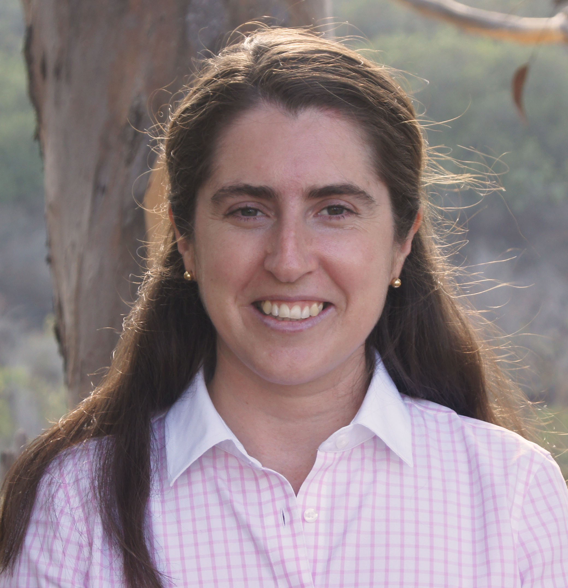

12 May 2026 · 08:30 – 12:00
Modern power system modeling and analysis spans multiple layers, from electromagnetic transient simulations, to small-signal modeling, and to large-scale optimization problems. Open-source platforms are becoming central because they enable reproducibility, accelerate innovation, and lower entry barriers for users.
In this hands-on tutorial we will introduce participants to four open-source tools, guide interactive demonstrations and activities, and offer opportunities to engage directly with developers. Importantly, we have an “all questions are good questions” policy to encourage participation and create a welcoming environment for all participants.
We will teach how to use the following open-source tools: HERMES (Hybrid EMT/RMS Modern Electric power system Simulator, ETH Zurich), STING (Specialized Tool for INverter-based Grids, UC San Diego), Pyoframe (fast and memory-efficient DataFrame-based modeling interface for optimization problems, Bravos Power, UC San Diego and MIT), and Daline (data-driven power flow linearization toolbox, Shanghai Jiao Tong University).
HERMES Hybrid EMT/RMS Modern Electric power system Simulator
A simulator for modern power-system dynamic analysis, combining electromagnetic-transient and phasor-domain modeling for advanced stability studies.
ETH Zurich
STING Specialized Tool for INverter-based Grids
A package that provides several modules for the modeling and simulation of inverter-dominated grids. These modules include small-signal modeling, model order reduction, electromagnetic transient simulation and capacity expansion of inverter-dominated grids.
UC San Diego
Pyoframe DataFrame-based modeling interface for optimization problems
A fast and memory-efficient Python library for building large optimization models, featuring automatic multi-threading, fast resolves, and a legible syntax.
Bravos Power, UC San Diego, MIT
Daline Data-driven power flow linearization toolbox
A toolbox implementing 40+ mainstream data-driven power flow linearization methods, paired with RePower, an LLM-driven platform that supports autonomous research for data-driven tasks in power systems.
Shanghai Jiao Tong University
Four hands-on interactive tutorial sessions.
| Time | Session | Description |
|---|---|---|
| 08:30 – 08:40 | Introduction | Welcome, goals, overview. |
| 08:40 – 09:25 | Interactive tutorial | HERMES. We will provide a brief introduction and overview of HERMES (10 min). Then we will demonstrate, through a hands-on example, how HERMES can be used for standard modern power-system dynamic analysis (15 min). Finally, we will conduct an interactive demonstration for advanced power-system stability analysis (20 min). |
| 09:25 – 10:10 | Interactive tutorial | STING: Specialized Tool for INverter-based Grids. We encourage attendees to install STING in their computers before attending this workshop. A detailed instruction of how to install STING is provided in repository. In the workshop, we will provide a brief introduction and overview of STING and then hold an interactive tutorial session on how to use STING for small-signal analysis, control, and model-order reduction of inverter-dominated grids (40 min). |
| 10:10 – 10:30 | Break | Coffee. |
| 10:30 – 11:15 | Coding challenge | Pyoframe: A Python Library for Building Large Optimization Models. Ahead of this coding workshop, please download the starter code and install the required packages according to the instructions in Section A. In the workshop, beginning with a brief (10 min) presentation, we will introduce key concepts and mental models needed for participants to feel competent using optimization modeling tools, and will discuss the latest available tools and their tradeoffs. Then, participants will apply these concepts by implementing their own energy systems optimization model in Pyoframe during a 35 min guided coding challenge. Participants will leave capable of using Pyoframe’s unique features (automatic multi-threading, fast resolves, legible syntax, friendly user experience, etc.) to build large and informative optimization models. |
| 11:15 – 12:00 | Interactive tutorial | Daline. We will provide a brief introduction and overview of Daline (5 min). Then, we will hold a tutorial coding session on how to quickly linearize power flows, we will compare mainstream data-driven power flow linearization methods (40+ methods), and we will demonstrate RePower, an LLM-driven platform that supports autonomous research for data-driven tasks in power systems (40 min). |
HERMES:
STING:
Pyoframe:
Daline:

Associate Professor, UC San Diego
Patricia Hidalgo-Gonzalez is an Associate Professor in Mechanical and Aerospace Engineering and the Center for Energy Research at UC San Diego. Her work focuses on high penetration of renewable energy (long-term planning and control of power dynamics) using optimization, control theory and machine learning.
Full Professor, ETH Zurich
Gabriela Hug is a Full Professor and Head of the Department of Information Technology and Electrical Engineering at ETH Zurich. She is also the Head of the Energy Science Center. She develops computational methods and tools which ensure a reliable and efficient operation of the future power grid dealing with the inherent uncertainty of variable renewable generation.
For questions about the workshop program or registration, please contact the organizers: Patricia Hidalgo-Gonzalez (phidalgogonzalez@ucsd.edu) or Gabriela Hug (hug@eeh.ee.ethz.ch).